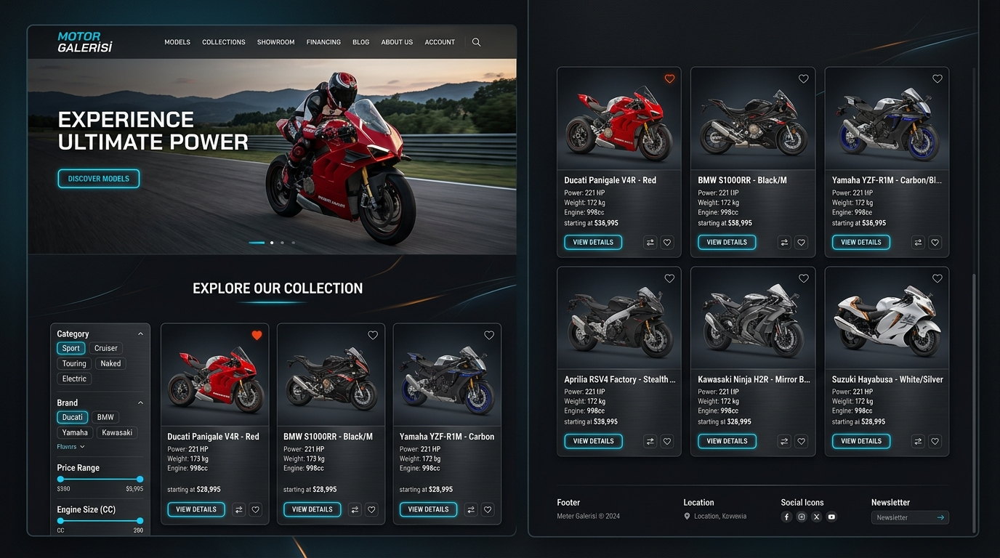
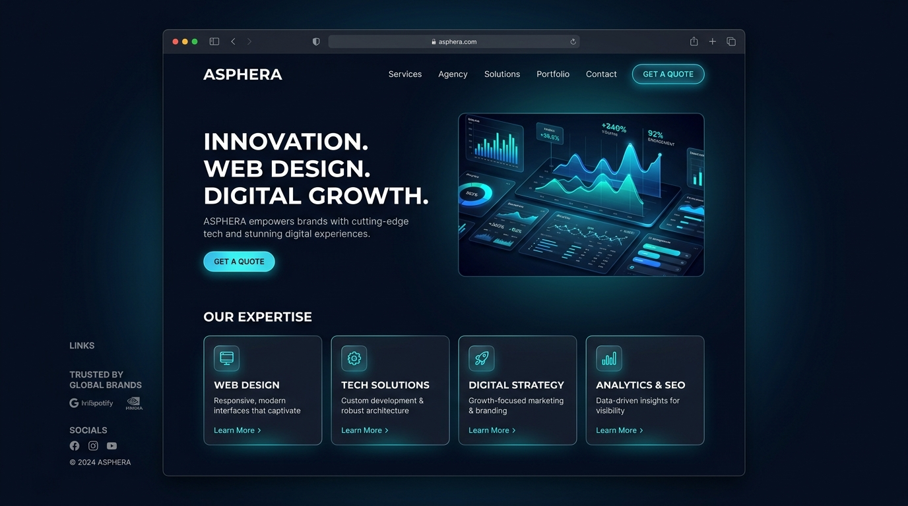
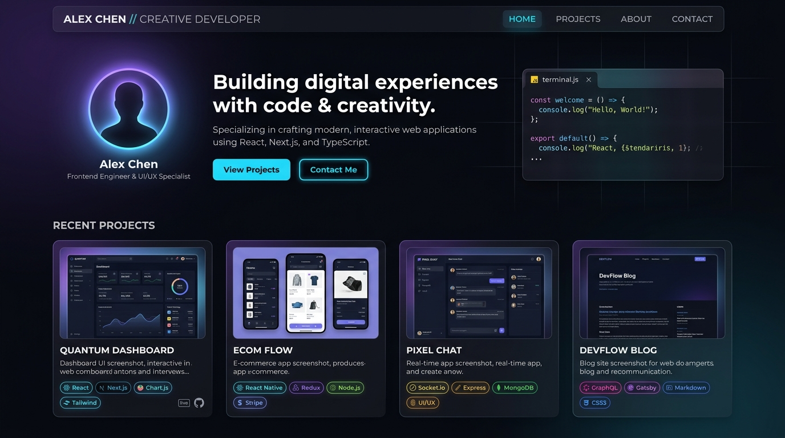

Motor Galerisi
HTML, CSS ve Bootstrap ile tasarlanmış modern motor galerisi web arayüzü. Mobil ve masaüstü cihazlarla tam uyumlu (responsive) ve temiz bir UI bileşen yapısı sunar.
Gürpınar İMKB Lisesi Yazılım Geliştirme ve Amasya Üniversitesi Bilgisayar Programcılığı mezunuyum. Web (React), mobil (React Native, Flutter) ve backend tarafında modern, kullanıcı odaklı ve yüksek performanslı çözümler geliştiriyorum.
Tasarım konseptinden çalışan ürüne kadar odaklandığım ana teknolojiler
HTML5, CSS3, modern JavaScript (ES6+) ve React ile hızlı, erişilebilir ve her cihazda kusursuz çalışan responsive web arayüzleri inşa ediyorum.
React Native, Flutter ve Dart teknolojilerini kullanarak hem iOS hem de Android cihazlarda akıcı çalışan modern mobil uygulamalar üretiyorum.
PHP, C#, Python dilleriyle iş mantığı ve API geliştirme; SQL ve Firebase ile güvenilir veri saklama ve sorgulama yapıları kuruyorum.
GitHub'da açık kaynaklı olarak geliştirdiğim gerçek çalışmalar

HTML, CSS ve Bootstrap ile tasarlanmış modern motor galerisi web arayüzü. Mobil ve masaüstü cihazlarla tam uyumlu (responsive) ve temiz bir UI bileşen yapısı sunar.

JavaScript ile zenginleştirilmiş kurumsal web arayüzü. Vercel üzerinde canlıda çalışan, dinamik içerik ve etkileşimli kullanıcı deneyimi sağlayan bir proje.

Saf HTML5, modern CSS3 ve Vanilla JavaScript ile geliştirilen, GitHub Pages üzerinde yayında olan portfolyo platformu. Emil Kowalski mikro etkileşimleri ve dark theme.
Gerçek projelerde ve kurumsal ortamlarda edindiğim saha tecrübeleri
Yazılım projelerinin uzaktan yönetim süreçlerini, profesyonel iş akışlarını ve sektörel işleyişi bizzat gözlemleyerek tecrübe edindim.
Gerçek kullanıcıların deneyimlediği bilgi işlem süreçlerine ve kurumsal yazılım operasyonlarına aktif destek verdim.